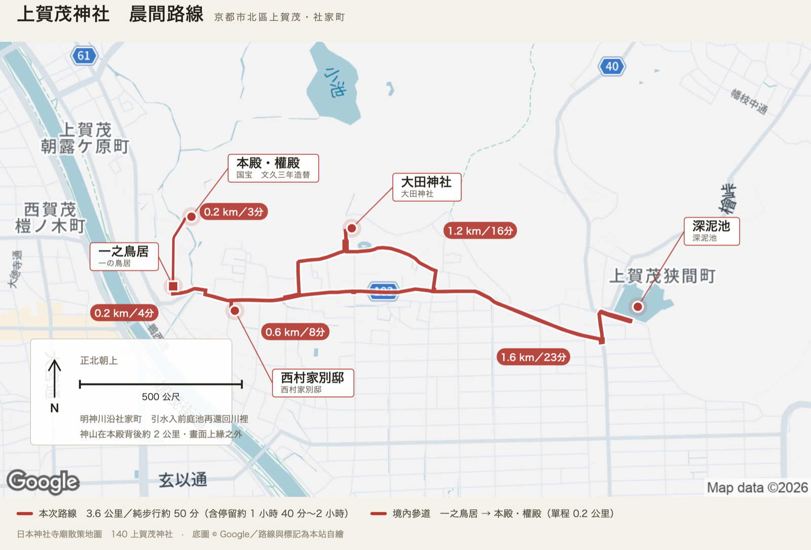

讀書筆記 ·
Chris 筆記｜自繪散策地圖的解法是圖文分離：Google 給底圖，路線自己畫
原文：開始使用 Google 地圖平台 · developers.google.com ·
我的想法
最近開始迷上了自繪散策地圖，試過很多種方法，包括在 Google Map 上直接操作，或者通過 Claude Code 利用 SVG 或 tldraw 來畫圖，但是效果都不是最佳的，於是想到了圖文分離的作法，這其實也是目前 ChatGPT 或 Nano Banana 的繪圖方法。簡單來說，就是讓 Google Map 提供底圖，然後自己將所有點的座標標出，利用 Python 直接在乾淨地圖上繪製路線並標註，這種作法能夠簡單分層，還能隨時變更。
如今，只要有了好的想法，你都能通過 AI Agents 快速實作，再也沒有那種卡住了的痛苦，這種愉悅感著實讓人著迷。

摘要 / Summary
上賀茂神社那篇文章裡的散策地圖，是這樣做出來的：不在 Google Maps 上標好點再截圖，而是跟 Google 要一張乾淨的空白底圖，再把路線與標籤自己畫上去。動手之前得先照官方入門頁走一遍設定——開一個 Google Cloud 專案、確認專案已啟用計費、把打算用的 API 一個一個啟用、建立一把 API 金鑰，正式使用前再替金鑰設限制。錢的部分不必緊張：這兩個服務每月各有一萬次的免費額度，而畫一張地圖是個位數次呼叫——上賀茂這張是底圖一次、路線兩次，再加上來回改版重抓的那幾次，整個專案連零頭都用不到。這張圖只用到兩個服務：Static Maps 給底圖，Directions 給步行路徑。
底圖那一步的重點是「叫它閉嘴」。Static Maps 可以帶樣式參數，把 POI 圖示、路名標籤、大眾運輸全部關掉，再指定水體填成藍色、自然地貌填成米色。Google 自己畫的東西越少，我畫上去的才讀得出來。剩下的是地形、街廓，和幾個大到不該消失的地名。
路線那一步是這次改版的核心。舊版的地圖只有五枚圖釘，看得出上賀茂神社、大田神社、深泥池各在哪裡，卻看不出怎麼從一個走到下一個。改用 Directions 之後，一之鳥居 → 西村家別邸 → 大田神社 → 深泥池 → 回一之鳥居這條環線是它算出來的實際步行路徑，從一之鳥居往東拐進社家町、沿明神川走到大田神社，再一路東行到深泥池，總長 3.6 公里、五十分鐘，每一段各自的距離與時間也一併回傳，直接變成圖上那幾枚紅色膠囊。山谷與街廓裡的路會繞，兩點之間拉直線會騙人——大村神社那張圖就是這樣：直線概值 4.3 公里，實際走是 5.3 公里，差了整整一公里。
標記與標籤全部自繪，原因很實際：Static Maps 內建的圖釘只能放一個英數字元當標籤，中文根本塞不進去，也沒有引線可以把字拉到旁邊的空白處。既然知道底圖的中心經緯度與縮放級數，就能用 Web Mercator 的公式反推每個座標該落在圖上的哪一個像素，剩下的就是在那張 PNG 上疊一層自己畫的 SVG：圓點、方塊（車站）、引線、白底標籤盒、里程膠囊、左下角的正北箭頭與比例尺。
最後一步沒有辦法自動化。程式只給一組「大概放這裡」的初值，真正決定成敗的是看著圖把標籤一個一個挪開：這個蓋到地名了、那兩條引線交叉了、膠囊壓在路線上、左下角的 Google 標誌被擋住（那是使用條款不允許的）。上賀茂這張來回三輪才收斂。要同時避開地名、水岸、彼此的引線，這是判斷不是計算。
重點 / Keypoint
官方入門頁講的其實只有四件事：建立 Cloud 專案、確認啟用計費、啟用要用的 API 或 SDK、建立並限制 API 金鑰。「啟用計費」只是綁一張卡當保險，不等於會被扣款——頁面上那行 gcloud services enable 一次把 Maps、Routes、Places 三家族的端點全開起來——static-maps-backend、routes、geocoding-backend 都在裡面。實際上一張自繪路線圖只要開兩個就夠。
兩個端點都是 REST，帶著參數打一個網址就有結果，不必裝 SDK、不必開瀏覽器、不必跑無頭 Chrome 去截 Google Maps 的畫面。這也是為什麼整套流程可以寫成一支指令、之後想改就重跑。
每個服務每月各有一萬次的免費額度。Static Maps 是一萬次，路線那組（Routes Essentials）也是一萬次，超過才按每千次計價。個人做地圖的用量遠在這條線以下：一張圖抓一次底圖、每條路線各打一次，真正會浪費額度的是「改個標籤位置就整組重抓」，所以底圖與路線都要做快取。
Static Maps 的天花板是 640×640，加上 scale=2 之後成品最大 1280×1280。尺寸可以不是正方形，上賀茂這張用的是 640×360 的橫幅，成品 1280×720。要更大就只能自己拼圖磚，那是另一個計費項目。
內建 markers 的 label 只能放單一英數字元（A–Z、0–9）。這是「標記一律自繪」最根本的理由，不是美學偏好——中文標籤在 API 層就不成立。
距離與時間一律照 Directions 回傳的 legs 抄。路線的節點順序就是起點、途經點、終點的順序，legs 的數量固定是節點數減一。自己估的數字遲早會跟圖上的線對不起來。
快取的做法：把請求參數存成一份簽章放在圖檔旁邊，下次跑之前先比對，參數沒變就直接用磁碟上那張，不再打網路。
Google 標誌與「Map data ©」不可裁除、不可被遮住。這是 Static Maps 使用條款的要求，所以左下與右下要各留一塊淨空給它們，資訊面板得往上讓。
輸出兩張圖：一張海報版、一張純地圖版。純地圖版是量尺——要調某個標籤就開它、看游標在第幾個像素，那個數字可以原封不動填回設定檔。海報版多了標題與頁尾，座標會偏，不能拿來量。
分享用短連結：https://os.housearch.net/n/d